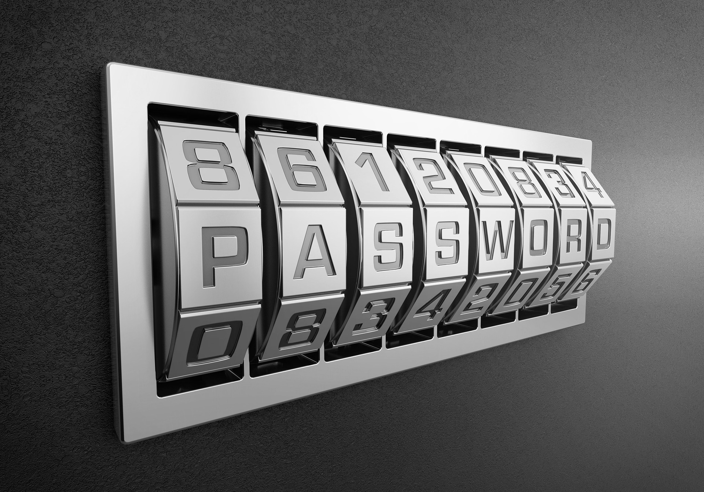

NAJPOGOSTEJŠI KLJUČI
- AES - Advanced Encryption Standard
- Triple DES
- Twofish
- Blowish
- SHA-256
- RSA - Rivest–Shamir-Adleman
AES, Twofish in Blowish spadajo med algoritme simetričnega ključa. Simetrična kriptografija je danes manj uporabljena, saj je nepraktična za uporabo preko interneta. Izmenjava ključev je precej zapletena in ni tako varna. Zato je danes bolj v uporabi asimetrična kriptografija, ki uporablja dva različna ključa.
RSA - ALGORITEM
RSA je računalniški algoritem javnega ključa. To pomeni, da imamo javni ključ za šifriranje in privatni ključ za dešifriranje. Največja prednost tega algoritma je njegova učinkovitost in varnost, saj bi hackerju vzelo ogromno časa za dešifriranje, saj je algoritem narejen tako, da ga je lahko zakodirati in zelo težko razvozlati, če nimaš nečesa kar imenujemo »trapdoor«. Pa si na primeru poglejmo zakaj.
Primer
Recimo da imamo osebo Bob, ki želi postali sporočilo Ani, med njima pa sporočila prestrega zlobni Janez. Bob mora torej zakodirati svoje sporočilo, ga poslati Ani, ta ga more dešifrirati in svoje sporočilo nazaj zakodirati.
Ena od metod, ki jo uporablja RSA algoritem je Evklidov algoritem s praštevili, zato si mora Ana najprej izbrati dve praštevili, imenujmo ju p in q.
p = 2
q = 7
Ti dve števili zmnoži. Temu številu recimo n – predstavlja njen javni ključ.
N = p * q = 14
Nato Ana izbere še število k, ki v resnici ustreza določenim posebnim kriterijem, ki so precej kompleksni. V našem primeru bo
k = 11
Bom ima svoje sporočilo, ki ga želi zakodirati, recimo, da je to številka 4. Označimo ga z M, kot "message".
M = 4
S pomočjo podatkov od Ane Bob sedaj zakodira svoje sporočilo s formulo:
𝑀^𝑘 = 𝑐 𝑚𝑜𝑑 𝑛
4^11 = 𝑐 𝑚𝑜𝑑 14
c = 2
Izračuna c in ga pošlje Ani. Nato Ana s pomočjo tega izračuna e – kot encryption.
Prej vpeljemo nekaj, čemur rečemo Phi – funkcija. Postopek je pogruntal Euler in je izjemo težak, razen če poznaš tole metodo – v našem primeru bo to »trapdoor«. Formule ne bomo na dolgo razlagali, povejmo samo to, da velja:
Φ(N) = (p - 1) * (q - 1) = (2 - 1) * (7 - 1) = 6
p – 1 je število številk, ki nima nobenega skupnega faktorja s številom p, ker je p praštevilo je formula enostavna, odšteti moramo samo 1, saj je edino število, ki ima skupni faktor s tem številom ravno to število, in 1, vendar 1 ne štejemo, saj je skupni faktor vsem številom. Če poznamo p in q, lahko z lahkoto izračunamo Phi funkcijo, kar pa Ana seveda pozna, saj to sestavlja njen zasebni ključ.
Še nekaj o Pfi - funkciji
Primer si ogledujemo z zelo majhnimi številkami za lažje razumevanje. V realnosti so te številke več sto mest dolge. Zakaj? Noben računalnik na svetu nima problema z množenjem več sto, celo tisoč števk dolgih številk, vzame mu manj kot sekundo. Problem se pojavi pri prafaktorizaciji in iskanju Phi - funcije. Brez da poznaš vrednosti p in q je postopek praktično nemogoč. Računalnik do dolžine 60 za izračun Phi - funcije porabi približno sekundo. Vsaka dodatna števka postopek eksponentno podaljšuje in tako pri številkah dolgih nekaj sto števk postopek traja že več stoletij.Sedaj lahko izračunamo e.
k ∗ e 𝑚𝑜𝑑 Φ(𝑁) = 1
11 ∗ e 𝑚𝑜𝑑 6 = 1
e = 5
S pomočjo izračunanega e-ja in c-ja, ki ga je dobila od Boba lahko sedaj dešifrira sporočilo:
c^e mod n = M
2^5 mod 14 = 4
M = 4